| 日付 | 2020年8月30日（日） |
|---|---|
| 山域 | 丹沢 |
| メンバー | 家族（長男・7歳） |
| 山行形態 | 子連れ日帰り |
| アクセス | 車 |
| ルート (Map) | 菩提峠駐車場 (7:13) - (8:36) 二ノ塔 - (8:49) 三ノ塔 - (9:22) 烏尾山 - (9:49) 行者岳 - (10:38) 新大日 - (11:22) 塔ノ岳 (12:12) - (12:44) 新大日 - (13:26) 行者岳 - (14:22) 三ノ塔 - (14:38) 二ノ塔 - (15:11) 菩提峠駐車場 |
今日は娘の用事があるため、息子と2人で山に行くことにする。
行先は塔ノ岳。好きな山だが行程が長いため
子連れになってからは行く機会がなく、なんと10年振りの訪問だ。
暑くて8月に登る山ではないのだが、近場に高い山がないため、
ちょっと無理して挑戦してみることにする。
菩提峠駐車場に車を停める。標高765m。
駐車場は広く、比較的空いている。
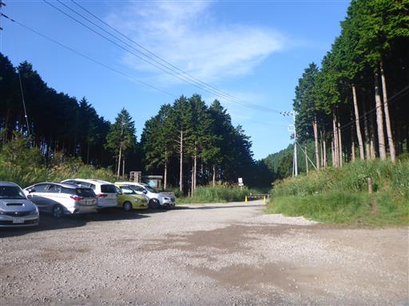
車道を歩いて登山口に移動。
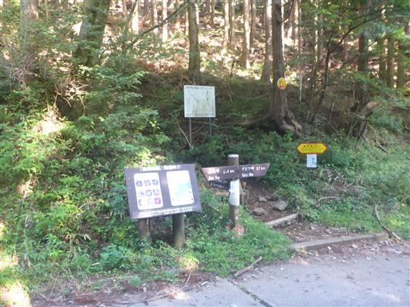
しばらく登ると車道に出てくる。
この車道をそのまま先へ進むと、菩提峠へのショートカットができそうだ。

ここから本格的な登山開始。まだ朝早いがかなり暑い。
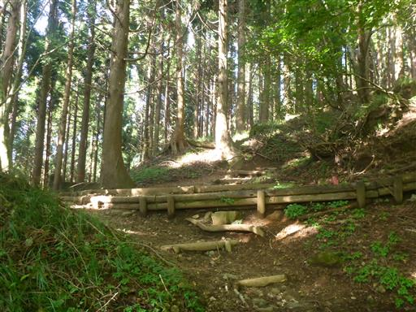
周囲にはマツカゼソウの花がたくさん咲いている。

風が吹き抜ける場所。ほとんど無風なのだが、たまにこういう場所がある。
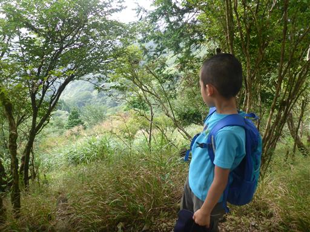
早くも雲が上がって来て視界が無くなる。
展望が無いのは辛いが、暑いので日差しが無くなるのは助かる。
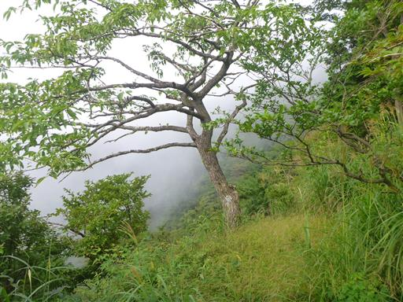
息子はイチゴが気になるらしく、見つける度に立ち止まっている。
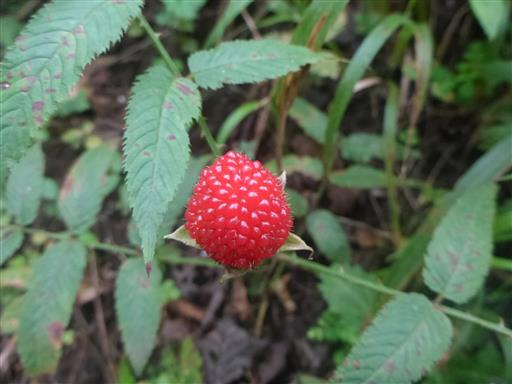
暑い中の階段登り。全くペースが上がらない。
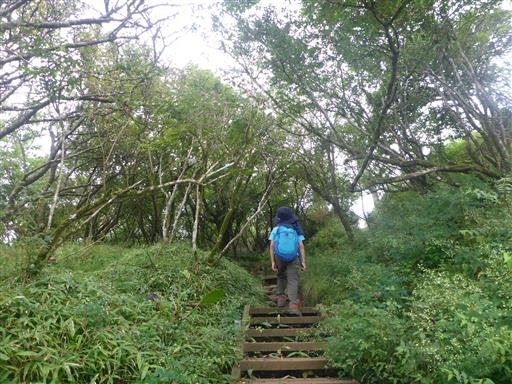
ようやく二ノ塔に到着。本山行の一番きつい登りとはいえ、
こんな序盤で疲れていては、山頂に辿り着けるのか不安になる。
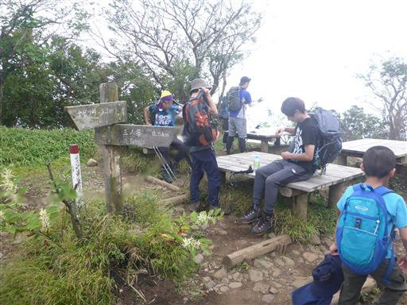
三ノ塔に向けて出発。少し下ったらまた登りが始まる。
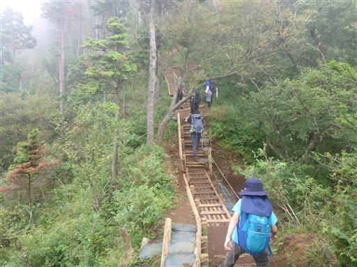
登山道のほとんどは階段か木道だ。

三ノ塔に到着。
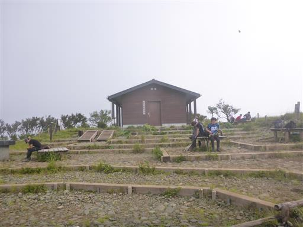
ホトトギスの花があちらこちらに咲いている。
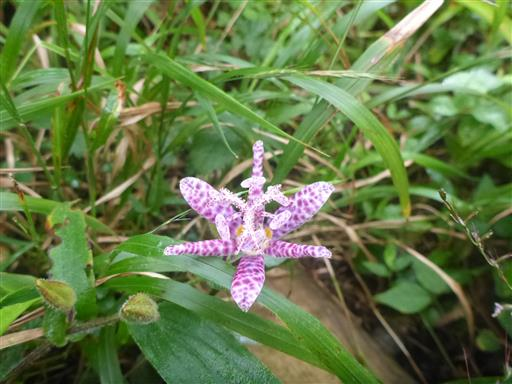
雲に覆われ視界はあまり無い。
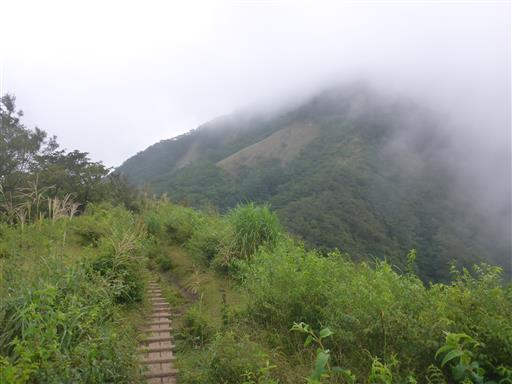
烏尾山に到着。烏尾山荘は営業していないようだ。
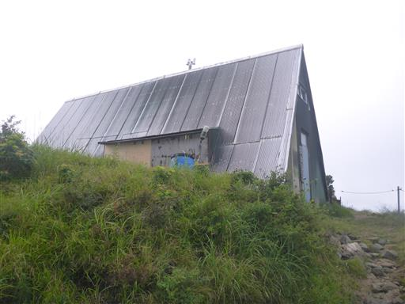
少しだけ遠くの視界が広がる。
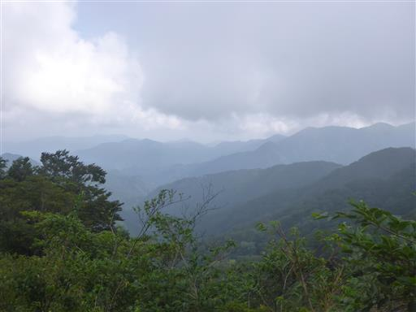
ときどき青空が顔を見せる。
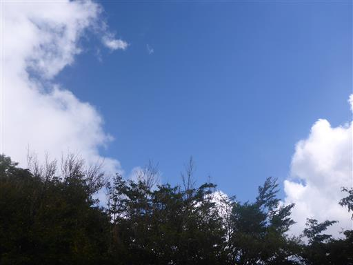
しかし展望がない中、青空が出ても暑いだけで、全くありがたくない。
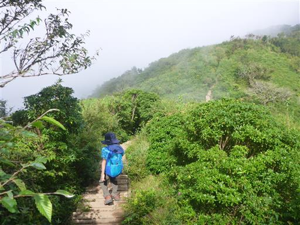
行者岳の鎖場を通過。
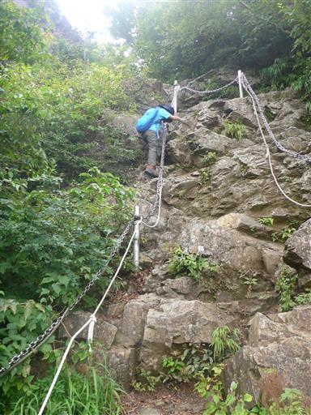
その先は断崖絶壁の痩せ尾根。
道は整備されているので、ほとんど危険はない。
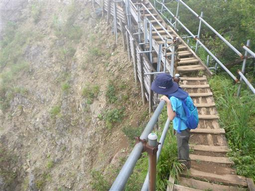
巨大なアザミ。フジアザミだろうか？
アザミは登山道のいたるところで生えていて、足が葉に触れると痛い。
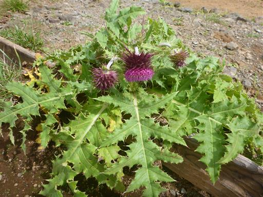
長く続く木道。
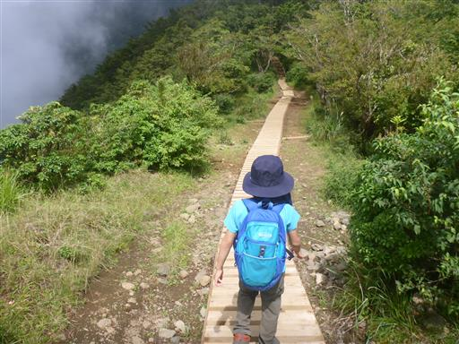
新大日茶屋に到着。もう閉鎖されていて建物は傾いている。
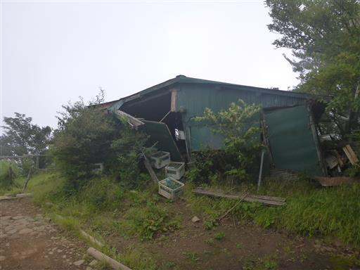
ここからも何度かアップダウンを繰り返し山頂を目指す。
息子は虫を見つけては立ち止まるので、スピードは上がらない。
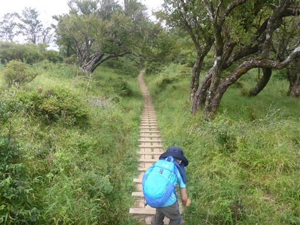
ようやく塔ノ岳山頂に到着する。標高1491m。
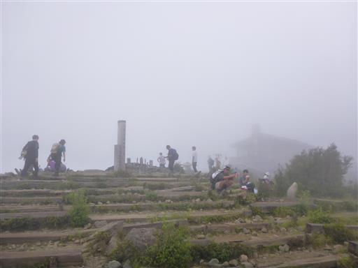
雲に覆われてほとんど視界はないが、ときどき雲が取れて
ユーシン渓谷や丹沢山方面が見える。
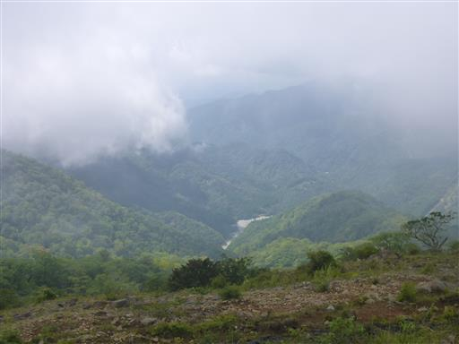
昼食をとったら下山開始。帰りも雲の中だ。
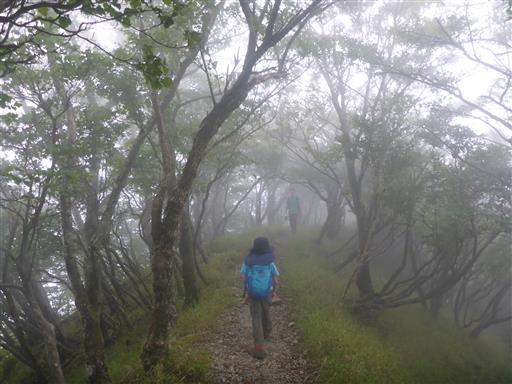
岩場の側に可憐な花を発見。コイワザクラだろうか？
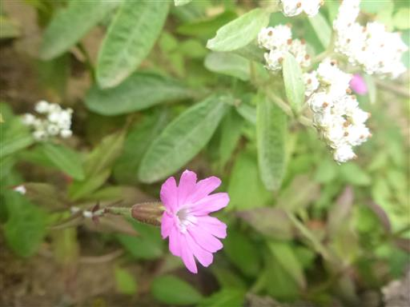
再び行者岳の鎖場。
下りより簡単なはずだが案外苦戦している。
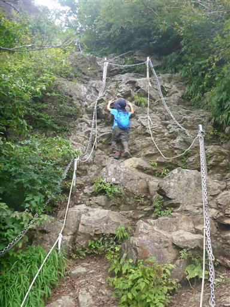
この植物は何だろう？全身トゲトゲだ。
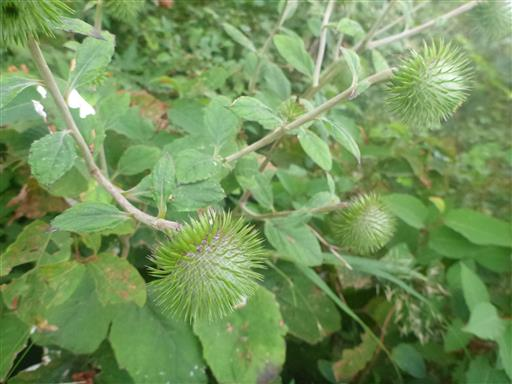
長い登りを終えて、三ノ塔に戻ってくる。休憩小屋を覗いて見る。
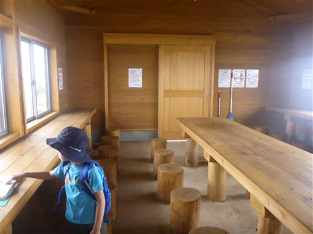
バッタを捕まえる。写真には取り損ねたがトカゲも捕まえた。
息子は虫をいろいろ捕まえられて満足している。
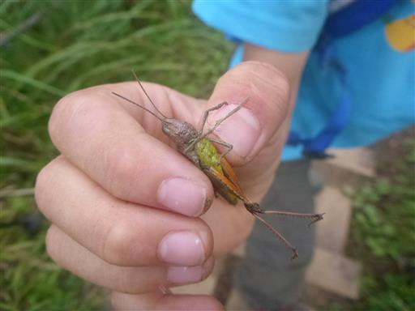
二ノ塔からの下山時にようやく視界が開ける。
天気は回復傾向で青い海が見える。
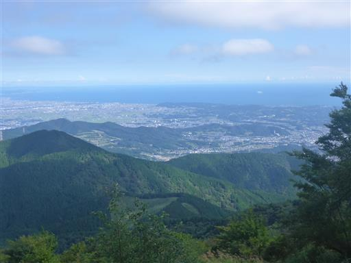
大山の姿もはっきり望める。
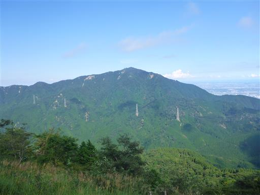
時間が押しているため、二ノ塔からの下山はペースアップ。
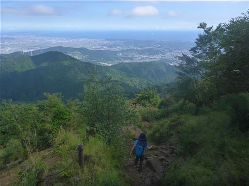
林道との交差点に下山。
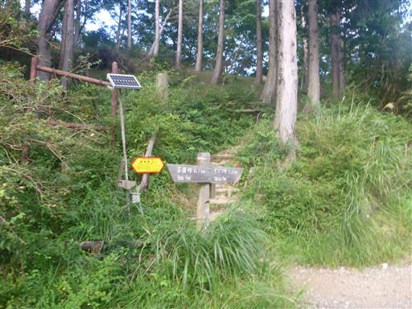
ここからは菩提峠駐車場まで林道を歩くことにする。
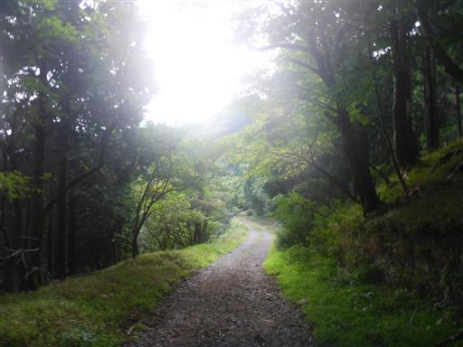
無事下山。
暑い中でのロングコースだったが、息子は元気に歩き切った。
展望が得られなかったのは残念で、涼しくなったら再訪したい。
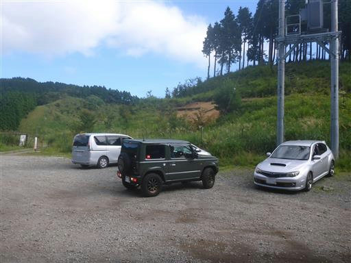